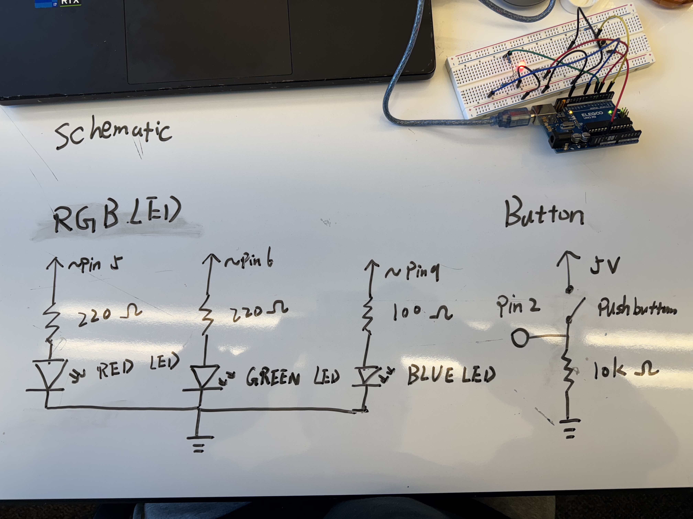
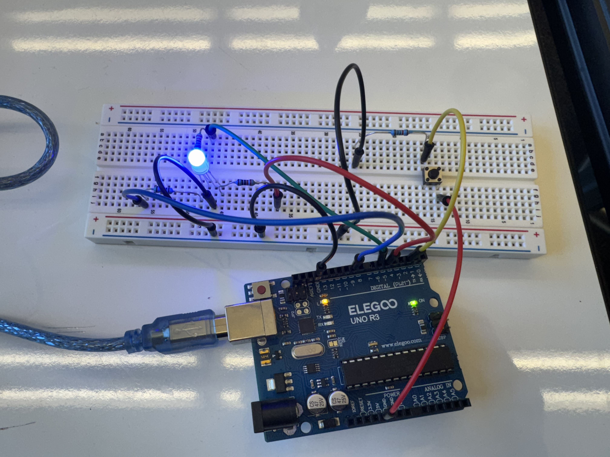
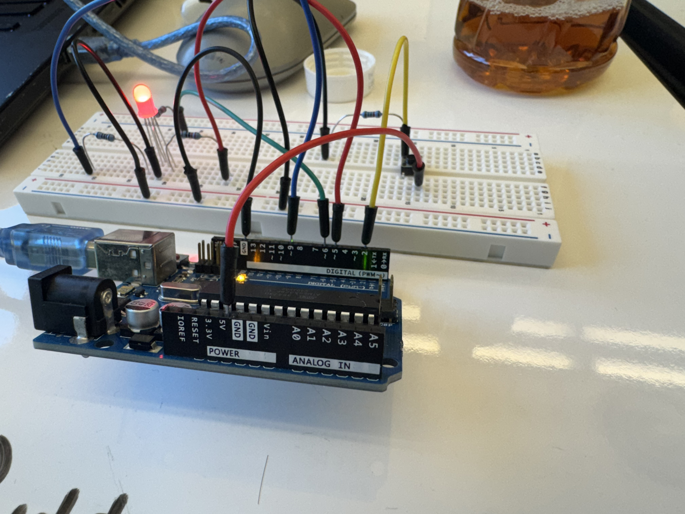
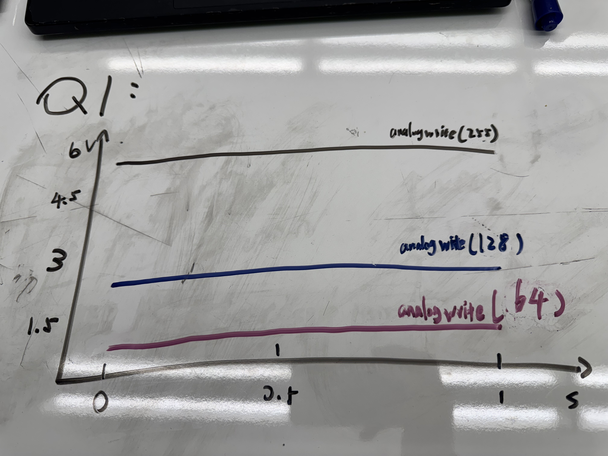
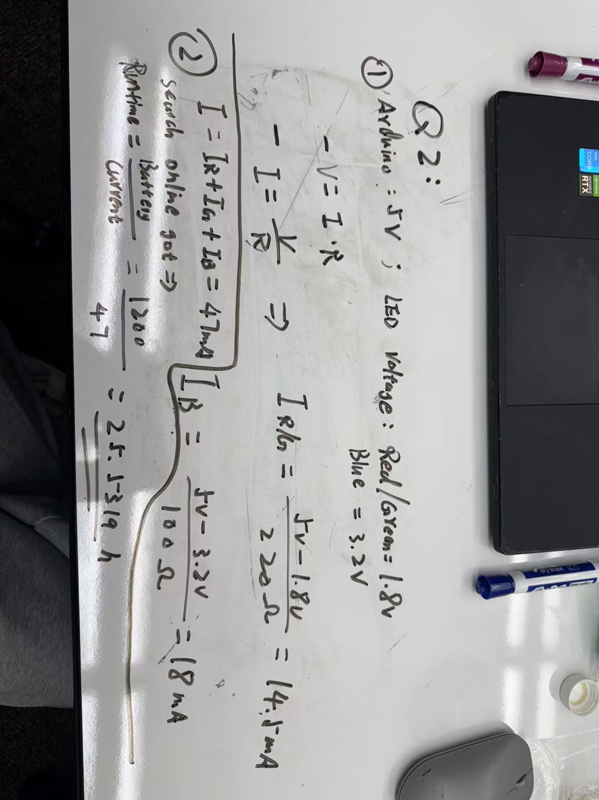

This is my circuit's operation

When I press the button, will start fading the pink color of the rgb light
Here is all the documentation for assignment 2!
This is my schematic
I use 220 ohm resisters for Red and Green LED light, and 100 ohm for blue LED light.
The Red and Greem votage drop is 1.8v, and blue is 3.2 v, so for the equation V = I + R to get the R for red and green is 160 ohm, so I choose 220 ohm for these two lights resisters. for Blue the result is 85 ohm, so I choose 100 ohm to be the resister. For the button, The resistor must be large enough to avoid significant current flow when the button is pressed
This is my circuit
 Use RGB light to create fading feature
This is my firmware
/*
Fading
This example shows how to fade an LED using the analogWrite() function.
The circuit:
- LED RED attached to pin 5 through a 220-ohm resistor.
- LED GREEN attached to pin 6 through a 220-ohm resistor.
- LED BLUE attached to pin 9 through a 100-ohm resistor.
- Pushbutton attached to pin 2, connected to +5V and ground with a 10K pull-down resistor.
Created 1 01/19/2025 by Yanxi(fifi) Feng
*/
// Define pin numbers for LEDs and the button
const int ledPin_1 = 5; // RED LED pin
const int ledPin_2 = 6; // GREEN LED pin
const int ledPin_3 = 9; // BLUE LED pin (PWM pin)
const int buttonPin = 2; // Button pin
// To store the button state
int buttonState = 0;
void setup() {
// Set LED pins as outputs
pinMode(ledPin_1, OUTPUT);
pinMode(ledPin_2, OUTPUT);
pinMode(ledPin_3, OUTPUT);
// Set button pin as input
pinMode(buttonPin, INPUT);
}
void loop() {
// Read the state of the button
buttonState = digitalRead(buttonPin);
if (buttonState == HIGH) { // If button is pressed
// Fade LEDs in
for (int fadeValue = 0; fadeValue <= 255; fadeValue += 5) {
analogWrite(ledPin_1, fadeValue); // Fade RED LED
analogWrite(ledPin_3, fadeValue/2); // Fade BLUE LED
// Combin these two light will fade for Pink
delay(20); // Short delay for visible fading
}
// Fade LEDs out
for (int fadeValue = 255; fadeValue >= 0; fadeValue -= 5) {
analogWrite(ledPin_1, fadeValue); // Fade RED LED
analogWrite(ledPin_3, fadeValue/2); // Fade BLUE LED
delay(20); // Short delay for visible fading
}
} else { // If button is not pressed
// Sequentially turn LEDs ON and OFF
digitalWrite(ledPin_1, HIGH); // Turn RED LED ON
delay(1000); // Wait for 1 second
digitalWrite(ledPin_1, LOW); // Turn RED LED OFF
digitalWrite(ledPin_2, HIGH); // Turn GREEN LED ON
delay(1000); // Wait for 1 second
digitalWrite(ledPin_2, LOW); // Turn GREEN LED OFF
digitalWrite(ledPin_3, HIGH); // Turn BLUE LED ON
delay(1000); // Wait for 1 second
digitalWrite(ledPin_3, LOW); // Turn BLUE LED OFF
}
}
Feature: If user do not press buton, the REG light will keep repeat the red, green, and blue light. and when user press the button, the RGB light will start fading the pink color
This is my circuit's operation
When I press the button, will start fading the pink color of the rgb light
Additional questions:
Question 1:
analogWrite(64) --- 64/255 * 5v = 1.25; analogWrite(128) --- 128/255 * 5 = 2.5; analogWrite(255) --- 255/255 * 5 = 5
Question 2:
25.5 hours